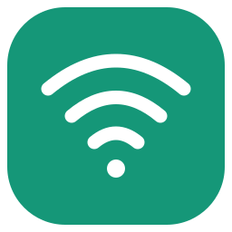
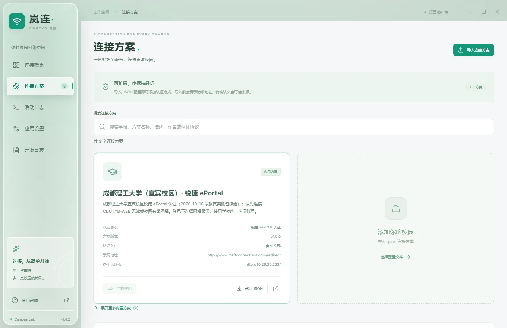
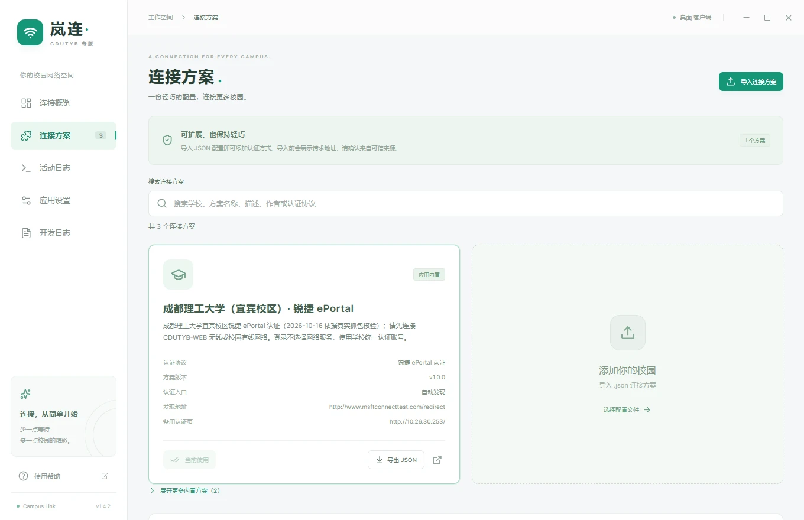

懂校园的连接方式
支持 Dr.COM、锐捷 ePortal Web 与声明式 HTTP 方案。内置方案自动发现认证入口，让每一次连接少一点折腾。
Dr.COMePortal WebHTTP

岚连.CAMPUS LINK 下载客户端为成都理工大学 · 宜宾校区而生
山水之间，自在相连。
岚连 Campus Link · CDUTYB 专版
安装即选中宜宾方案，输入账号密码，轻松连接校园网。
v1.4.2 Windows & macOS MIT 开源

v1.4.2 界面离线预览 · 无真实账号与网络会话
01 / MADE FOR YOUR CAMPUS
从龙头山到观斗山，从教室到宿舍。
把复杂的认证留给岚连，把时间留给校园生活。
成都理工大学（宜宾校区）已为你选中，
无需手动填写认证地址或选择网络服务。
使用学校统一认证账号。按需加密记住密码、
自动连接，让下一次连接更轻松。
YOUR CAMPUS. YOUR CONNECTION.
锐捷 ePortal Web 认证
请先接入 CDUTYB-WEB 无线或校园有线网络。
校园账号、欠费与设备上限问题请联系校园网服务渠道。
来自其他学校？在“连接方案”搜索、切换，或导入匹配的 JSON 方案。了解方案扩展 ↗
02 / SMALL APP. THOUGHTFUL DETAILS.
连接只是开始。
那些细碎的事，岚连替你记着。
支持 Dr.COM、锐捷 ePortal Web 与声明式 HTTP 方案。内置方案自动发现认证入口，让每一次连接少一点折腾。
确认离线后使用可用凭据自动重连；网络变化时快速检查。托盘里，一键暂停或恢复守护。
默认宜宾方案，支持搜索学校、导入与导出 JSON。匹配的配置，可以分享，也可以带走。
Windows 托盘与 macOS 菜单栏常驻。可选开机自启动、启动后自动连接，并支持检查软件更新。
WINDOWS + macOS活动日志、服务器响应详情与脱敏诊断包，让排查更清楚。日志和诊断导出不包含密码或密文。
液态玻璃默认开启，经典外观随时切换。Windows 11 22H2 及以上支持系统 Acrylic 桌面透视。
看看两种外观03 / A LITTLE LIGHT. A DIFFERENT FEEL.
默认液态玻璃，或你熟悉的经典。
在“应用设置 → 界面外观”中，一键切换。

液态玻璃：通透的侧边栏与顶栏，让界面多一点呼吸。
v1.4.2 离线界面展示 · 系统 Acrylic 效果以实际桌面为准
04 / YOUR NEXT CONNECTION STARTS HERE
岚连 Campus Link · CDUTYB 专版 v1.4.2
选好你的平台，剩下的简单一点。
安装包未签名，macOS 未公证，系统可能提示拦截。查看安装说明 ↗ZIP、校验和与完整发布 ↗
OPEN SOURCE, OPEN POSSIBILITIES.
基于 NingMeng123 的 Campus Link 构建，由 PowerT-0704 维护 CDUTYB 专版，以 MIT 许可发布。
关于凭据：选择记住密码后，密码使用系统加密保存在本机，重启自动恢复；也可仅在本次运行中使用。系统暂不可读取时保留密文并可重试。日志与诊断导出不包含密码或密文。了解本地数据 ↗